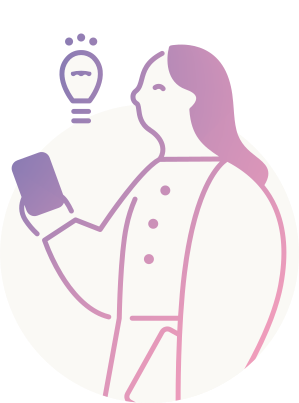
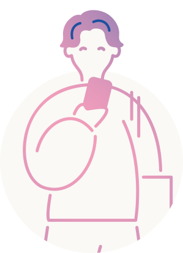
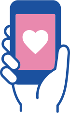
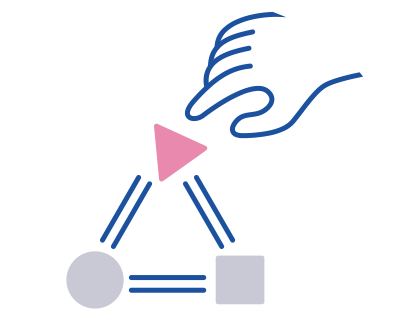
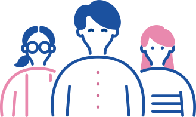

鉾田市で始まる新たな挑戦に
参加してみませんか？
鉾田市は、新たな取り組みを始めます。
地元で新しい挑戦をすることに興味がある、
鉾田市にゆかりのある高校生や大学生など
同世代の皆さん向けのプログラムです。
「地元から離れて住んでいるけれど、鉾田市が気になる。」
「できることなら、いつか地元に帰りたいと思っている。」
「パソコンを使った仕事など新しい仕事があるなら帰るのに。」
鉾田市では「ほこたワガママLab」を立ち上げ、
そんなことを感じている高校生や大学生など
同世代の皆さんと一緒に地域に変化を起こす
きっかけをつくりたいと考えています。
Vision
ほこたワガママLabでは、“ワガママ”の定義を
日々の生活の中で、
本当は「こうなったらいいのにな」と思っているけれど、
あきらめてしまっていることや我慢していること。
心の中にしまっていること。
としています。
鉾田市で暮らす人たちの”ワガママ”を可視化し
紐解いていくことで、まちの課題を見つけ、
地域で暮らす人たちや企業の皆さんと一緒に
デジタルで解決する挑戦をしていきます。
地元のことを知り、地元で暮らす人たちの
“ワガママを叶える挑戦”を通じて
鉾田市の未来をつくる挑戦をしてみませんか？



What to Do
地域の課題を解決するための
スマートフォンアプリの開発に挑戦！
プログラムを通して、皆さんそれぞれの視点で
鉾田市で暮らす人たちが日々感じている
”ワガママ”を把握することでまちの課題を発見し、
解決していく方法を一緒に考えていきます。
さらに、誰もが持っているスマートフォンを活用したアプリを
専門家による指導のもと開発して
市民の皆さんや鉾田市と連携している
企業の皆さんに向けて発表します。
ほこたワガママLab
で
できること

スマートフォンアプリが開発できる
IT未経験の人やパソコンが苦手な人でも専門家による指導のもとでスマートフォンアプリが開発できます。

社会課題の解決に
挑戦ができる
鉾田市で起きている課題に対して、自分たちにできることをデジタルを活用して解決する経験ができます。

地元で新たな仲間たちと
つながって成長できる
鉾田市で挑戦したい同世代の人たちとつながり、一緒に成長することができます。